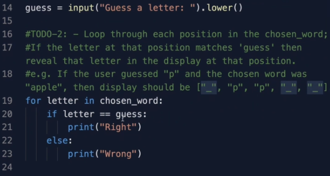

والان بعدما اكملنا المرحلة الاولى لنكمل بناء اللعبة باكمال الخطوة الثانية مجددا لدينا ثلاث مراحل اخرى علينا اكمالها سوف نقوم بتوليد قائمة بعدد الحروف المختارة من الكلمة الرمز _ ليمثل فراغ اي ان المستخدم لم يحزر هذا الحرف بعد فمثلا اذا كانت الكلمة apple فسنولد قائمة كالتالي display = ["_", "_", "_", "_", "_"]
في المرحلة التالية سوف نقوم بتعويض الحرف الصحيح الذي حزره المستخدم في القائمة مثلا الكلمة المختارة هي apple والمستخدم حزر الحرف p النتيجة هي display = ["_", "p", "p", "_", "_"]
في المرحلة الاخيرة ببساطة سوف نقوم بطباعة القائمة display و يمكننا ان نراها في ال console
ترون انه اضفت سطر يمكنني من تجربة الكود من خلال معرفة ماهي الكلمة المختارة وهذا سوف يسهل الامر على كثيرا في رحلتي لبناء هذه اللعبة
عندما تنهي جميع المراحل هذه هي النتيجة التي من المفروض ان تحصل عليها في هذه الحالة الكملة المختارة هي baboon فاذا حزرت الحرف b فسوف يتم طباعة القائمة وتم تعويض الفراغات في القائمة بالحرف
عندما تصبح جاهزا حاول اكمال جميع المراحل واذا اردت مساعدة او واجهت صعوبة قليلا ارجع الى نفس الموقع المشار اليه في الملف السابق و اقرأ حول دالة ال range ذكر نفسك قليلا كيف تعمل وعد مرة اخرى للكود
حظا موفقا